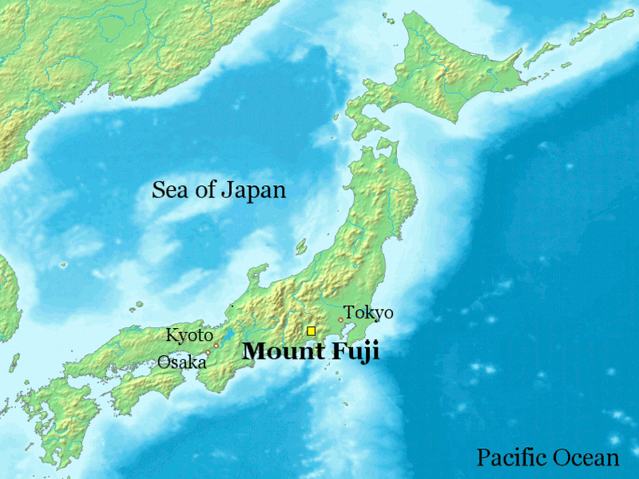
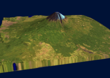

Géographie
Le mont Fuji est situé dans le centre du Japon et de l'île principale de Honshū, encadré par les monts Akaishi des Alpes japonaises à l'ouest, les monts Okuchichibu au nord et l'océan Pacifique au sud et à l'est. Administrativement, il est situé à cheval sur les préfectures de Shizuoka au sud et de Yamanashi au nord. S'élevant à 3 776 mètres d'altitude au pic appelé Shin-Fuji4, il constitue ainsi le point culminant du Japon10, visible les jours de beau temps de Tokyo situé à moins de 100 kilomètres au nord-est.
Il est bordé au nord par les cinq lacs Fujigoko : le lac Motosu, le lac Shōji, le lac Sai, le lac Kawaguchi et le lac Yamanaka. Il est possible de voir le volcan depuis ces plans d'eau et du lac Ashi. À ses pieds s'étend la forêt d'Aokigahara ainsi que des villes comme Gotenba à l'est, Fujiyoshida au nord et Fujinomiya au sud-ouest reliées avec le reste de la mégalopole japonaise, dont l'agglomération de Tokyo qui se trouve au nord-est, par un dense réseau de communication constitué de routes, d'une autoroute et d'un tronçon du réseau de trains à grande vitesse Shinkansen.
 